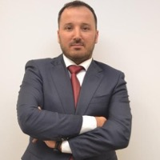

<!-- BLOCK 06: Team -->
<section id="team">
  <div class="container">
    <p class="section-label">Команда</p>
    <h2 class="text-center">Люди, які несуть персональну відповідальність за кожен проєкт.</h2>

    <div class="grid-4" style="margin-block-start: var(--space-lg)">

      <div class="glass-card team-card">
        <div class="team-avatar">
          
        </div>
        <h3>Dr inż. Eugeniusz Krop</h3>
        <span class="team-role">Технічний директор</span>
        <p>28 масштабних промислових впроваджень. Серед клієнтів — ORLEN. Якщо технологія не працює в полі — він знає чому і як виправити.</p>
      </div>

      <div class="glass-card team-card">
        <div class="team-avatar">
          
        </div>
        <h3>Dr hab. inż. Małgorzata Wilk</h3>
        <span class="team-role">R&amp;D та наукова верифікація</span>
        <p>Завідувачка кафедри AGH Kraków. TOP 2% вчених світу (Stanford, 2024). Кожна цифра на цьому сайті пройшла через її лабораторію.</p>
      </div>

      <div class="glass-card team-card">
        <div class="team-avatar">
          
        </div>
        <h3>Andrzej Krop</h3>
        <span class="team-role">Управління проєктами</span>
        <p>Екс-CEO міжнародних корпорацій. Гарантує, що проєкт завершується у строк та бюджет — не на папері, а в реальності.</p>
      </div>

      <div class="glass-card team-card">
        <div class="team-avatar">
          
        </div>
        <h3>Max Koval</h3>
        <span class="team-role">Міжнародний маркетинг</span>
        <p>Створює ринки там, де вчора бачили відходи. B2B-стратегія та circular economy позиціонування BioTC на ринках ЄС.</p>
      </div>

    </div>
  </div>
</section>
